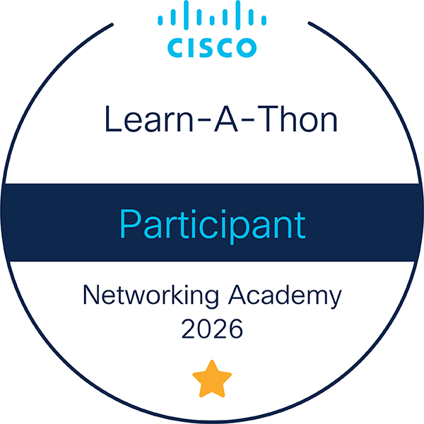
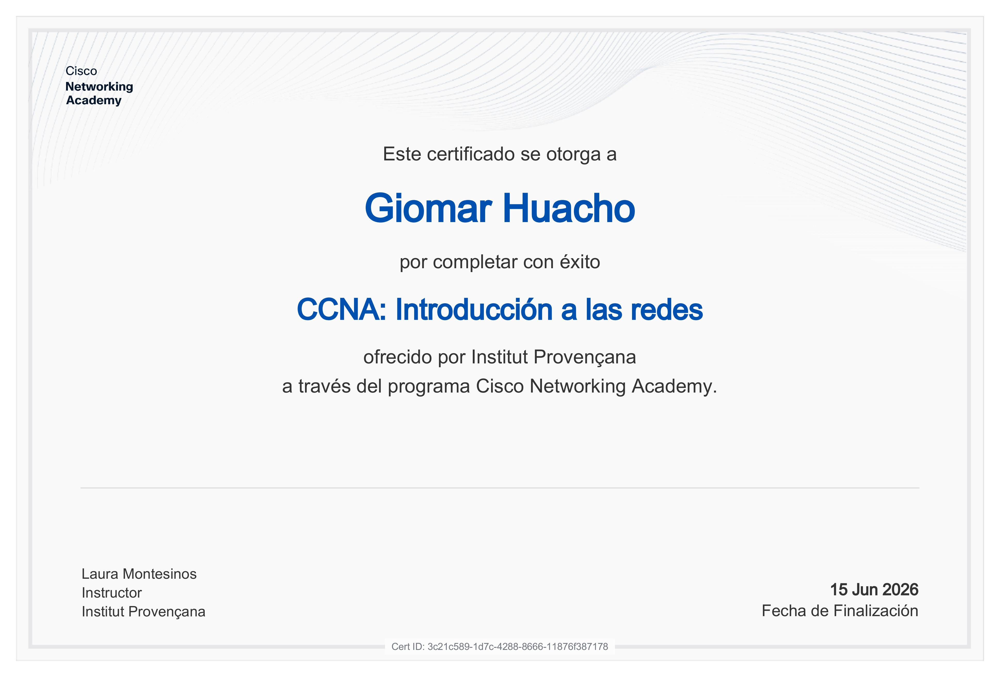

Giomar Huacho
Estudiante de Sistemas Microinformáticos y Redes | giomarhuacho150@gmail.com
Perfil Profesional
Mi objetivo es aportar valor a un equipo técnico mientras desarrollo mis Prácticas Obligatorias (FCT). Destaco por mi mentalidad resolutiva, capacidad de aprendizaje autónomo y gran pasión por el mantenimiento de hardware de alto rendimiento, configuración de redes y administración de sistemas.
Trayectoria
CFGM Sistemas Microinformáticos y Redes (SMIX)
Instituto Provençana | 2025 - PresenteFormación integral en administración de sistemas operativos, seguridad informática y despliegue de redes locales.
Insignias Oficiales

Competencias Técnicas
Infraestructura y Redes
Diseño en Cisco Packet Tracer. Resolución de incidencias, enrutamiento estático y VLANs (Nota: 9.76/10).
Hardware y Rendimiento
Montaje, diagnóstico de componentes y monitorización activa para prevenir fallos térmicos.
Administración de Sistemas
Gestión de permisos de usuario y manejo avanzado de consola/terminal en sistemas locales.
Estructuración de Datos
Diseño de bases de datos relacionales, consultas cruzadas y creación de formularios.
Certificación Oficial
